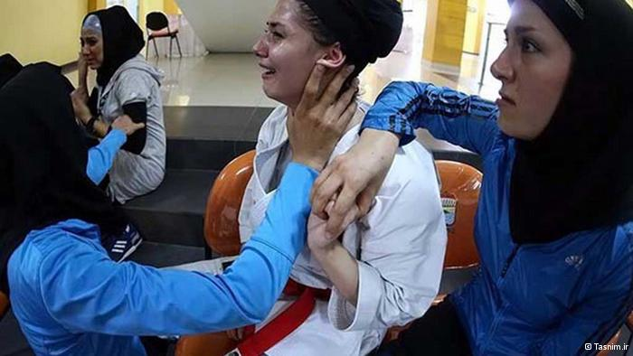

|
|
حذف زنان ورزشکار ایرانی در مسابقات فینال به دلیل داشتن حجاب
چهار شنبه3 مهر 1392
انتخاب: تیم کاتای بانوان ایران که با شایستگی به دیدار نهایی سومین دوره بازیهای همبستگی کشورهای اسلامی راه يافته بود، به دلیل اعتراض مصریها از دور مسابقات کنار رفت.

به گزارش مهر، تیم کاتای بانوان ایران که خود را برای دیدار فینال آماده میکرد، به دلیل اعتراض مصر از حضور در فینال محروم شد. در ادامه این مسابقات که در سالن "سری وی جایا پرومون سنتر" شهر پالم بانگ برگزار شد، تیم کاتای بانوان ایران متشکل از مهسا افسانه، الناز تقی پور و نجمه قاضیزاده در نخستین رقابت خود به مصاف تیم ترکیه رفت و با نتیجه 5 بر صفر به برتری رسید.
بانوان کاتاروی کشورمان با توجه به عدم حضور تیم عراق روی تاتامی با نتیجه 5 بر صفر پیروز شدند تا به مرحله نیمه نهایی مسابقات کاتای تیمی مسابقات کاراته بازیهای کشورهای راه یابند. شاگردان ارباب در این مرحله با تیم پرقدرت مصر روبه رو شدند که در این رقابت حساس نیز به برتری 4 بر یک دست یافتند و فینالیست شدند.
اما پس از گذشت 30 دقیقه رای این پیکار برگشته و تیم ملی ایران بازنده اعلام شد. علت این تصمیم اعتراض مصریها بود که چرا ایرانیهای بین کلاه و یقه خود از پارچه استفاده کرده بودند.
به این ترتیب تیم ایران به دلیل رعایت حجاب، درحالی با اعتراض مصریها از کسب مدال طلا بازماند که مسئولان کاروان وررشی ایران به این تصمیم کادر برگزاری اعتراض کردهاند.
ماجرا چه بود؟
اما ماجرا از این قرار است که انتشار عکسی از تیم کاتای ایران در مسابقات روز نخست واکنش مرضیه اکبری را به دنبال داشته است.
معاون ورزش قهرمانی وزارت ورزش در بخش بانوان در تماس با مسئولین تیم در اندونزی خواستار حضور نیافتن نفرات باقی مانده تیم در مسابقات شده بود. این درخواست در حالی از به مسئولان تیم ابلاغ شد که اعضای تیم از حجابی که به تصویب فدراسیون جهانی و اتحادیه آسیا رسیده بود استفاده کرد.
در همین رابطه بهرام افشارزاده با ابراز ناراحتی از تماس معاونت وزارت ورزش در بخش بانوان به خبرنگاران گفت: روز گذشته عکسی از بانوان کاراتهکا منتشر شد و پس از آن مرضیه اکبرآبادی معاون وزیر ورزش در حوزه بانوان با اندونزی تماس گرفت و به بانوان به خاطر حجابشان تذکر داد. ای کاش به جای اینکه خانم اکبرآبادی با سرپرست تیم تماس میگرفت با من یا رئیس فدراسیون کاراته مشورت میکرد. متاسفانه به راحتی مدال طلا را از دست دادیم. شاید اگر خانم اکبرآبادی با من تماس میگرفت این اتفاقات رخ نمیداد.
وی ادامه داد: وقتی فدراسیون جهانی کاراته یک حجاب بخصوص را تعریف کرده نباید آن را تغییر دهیم. فکر نمیکنم حجاب بانوان ایرانی مشکلی داشته باشد. من در جریان اتفاقات نبودم و همینجا مسائل را متوجه شدم. نکته اینجاست که روز گذشته بانوان ما با همین حجاب در مسابقات شرکت کردند و نمیدانم چرا امروز به این موضوع ایراد گرفتند.
دبیرکل کمیته ملی المپیک خطاب به مردانی داور ایرانی که باعث حذف بانوان از مسابقات کاتای تیمی شد اظهار داشت: قبول دارم قوانین باید اجرا شود اما باید بعضی از مواقع منافع کشورمان را هم درنظر بگیریم.
افشارزاده ضمن بیان این موضوع که تیم کاتای بانوان ایران به راحتی میتوانست مدال طلای مسابقات را به دست بیاورد عنوان کرد: برای این دختران ناراحت هستم. واقعا حیف شد آنها مثل دختران من هستند و کسب مدال طلا حقشان بود.
فرحناز ارباب سرمربی تیم کاتای بانوان هم با بیان اینکه با هفت ماه تمرین قهرمان جهان را شکست دادیم گفت: داوران باید زمان می دادند تا ما لباس خود را درست کنیم ولی وقتی ما راهی بازی نهایی شدیم این چنین ایراد گرفتند. حذف از مسابقات ناراحتی دارد ولی همین که توانستیم توانایی خود را اثبات کنیم خود گویای همه چیز است.
الناز تقیپور عضو تیم کاتای کشورمان هم گفت: هیچ کسی نمیتواند جلوی درخشش ما را بگیرد و باز هم تلاش میکنیم. این برخوردها باعث افزایش انگیزه ما می شود و مطمئن باشید دوباره با قدرت برگشته و مصر را شکست می دهیم.
به هر حال تیم ملی بانوان ایران در حالی از کسب یک نشان با ارزش بازماند که شایستگی خود را با شکست تیم مصر عنوان قهرمانی جهان را در کارنامه داشت شکست داده بود.